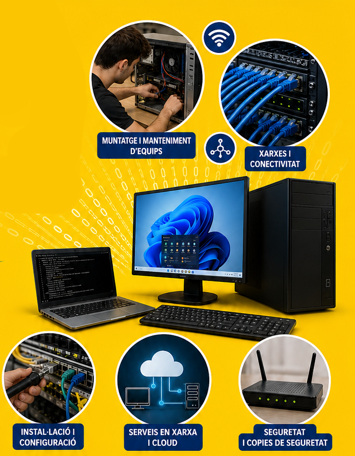
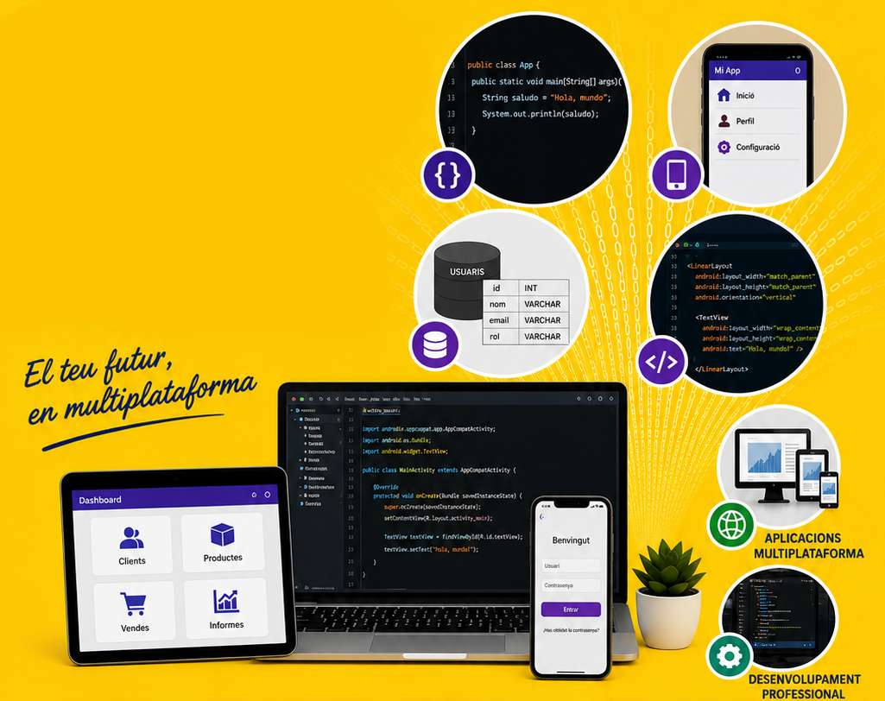
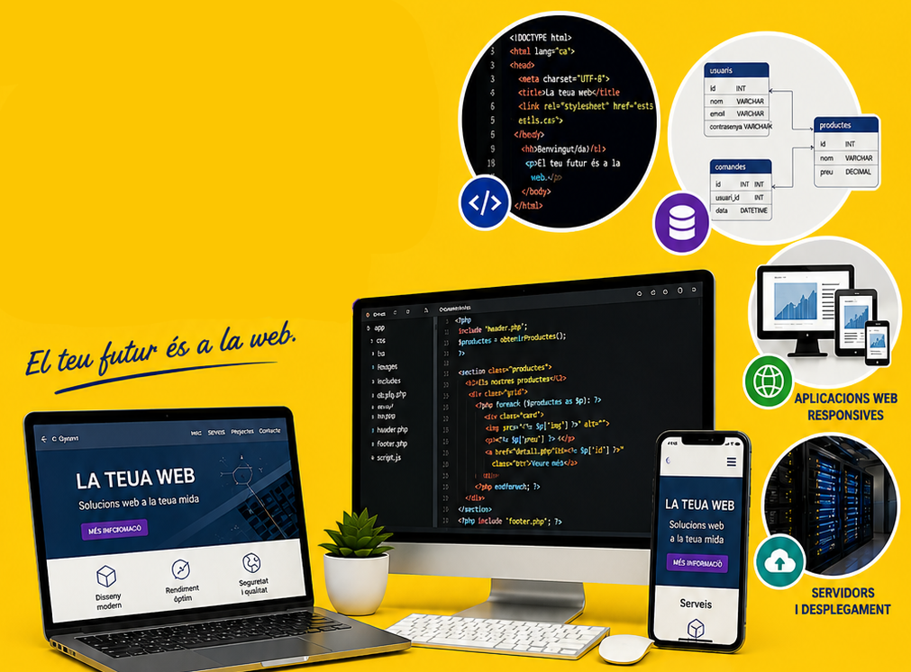
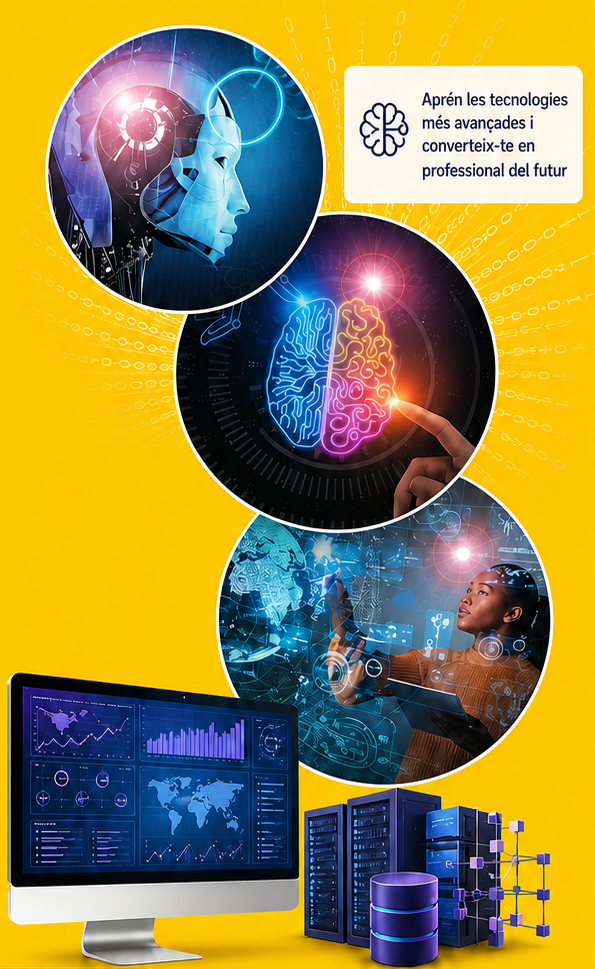
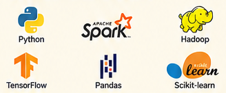
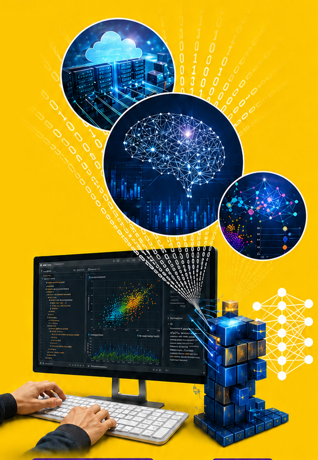
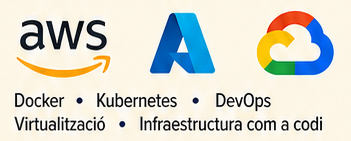

SMX · Sistemes Microinformàtics i Xarxes
Muntatge, manteniment, xarxes i serveis: forma't per gestionar tecnologia real des del primer curs.
IES Dr. Lluís Simarro · Xàtiva
Formació Professional
portal.edu.gva.es/ieslluissimarro · Tel. 962 249 080
Muntatge, manteniment, xarxes i serveis: forma't per gestionar tecnologia real des del primer curs.

El tècnic en SMX instal·la, configura i manté equips informàtics, xarxes locals i serveis. Aprén fent, amb tecnologia real i eixides professionals immediates.
El teu futur està connectat!
Administra servidors, desplega serveis i protegeix infraestructures professionals en entorns de xarxa.
Gestiona servidors, xarxes d'empresa i serveis d'internet. Configura routers, switches i implementa seguretat i monitoratge en entorns reals.
El teu futur és a les xarxes
Desenvolupa programari per a dispositius mòbils, escriptori i serveis integrats amb bases de dades.

Programa interfícies gràfiques i aplicacions multiplataforma. Accedeix a bases de dades, integra serveis i publica apps a botigues reals.
El teu futur, en multiplataforma
Dissenya i construeix webs modernes amb frontend, backend, seguretat i desplegament professional.

Desenvolupa el frontend i el backend de webs modernes. HTML, CSS, JavaScript, PHP, bases de dades, APIs REST i desplegament en servidors professionals.
El teu futur és a la web
Aprén les tecnologies més avançades per convertir grans volums de dades en decisions intel·ligents.


Gestiona i analitza grans volums de dades. Aplica tècniques d'intel·ligència artificial i aprenentatge automàtic. Entrena models predictius i desplega-los en entorns distribuïts.
El teu futur és en la IA!
De la neteja i depuració de dades fins a l'entrenament de models de Machine Learning aplicats.

Extreu, neteja i entrena models de Machine Learning. Controla biaixos, classifica dades i avalua models predictius en projectes reals d'indústria.
El teu futur està en la IA
Desplega i opera infraestructures cloud segures amb automatització, contenidors i cultura DevOps.

Administra recursos cloud, gestiona la seguretat i la identitat, desplega aplicacions i automatitza infraestructures amb eines professionals del sector.
El teu futur està en el Cloud!

Primer pas cap a l'ocupació digital
El teu futur està connectat!
Administra, connecta i protegeix
El teu futur, en multiplataforma
El teu futur és a la web
Transforma dades en intel·ligència
Del dato al model intel·ligent
El teu futur és en el Cloud!